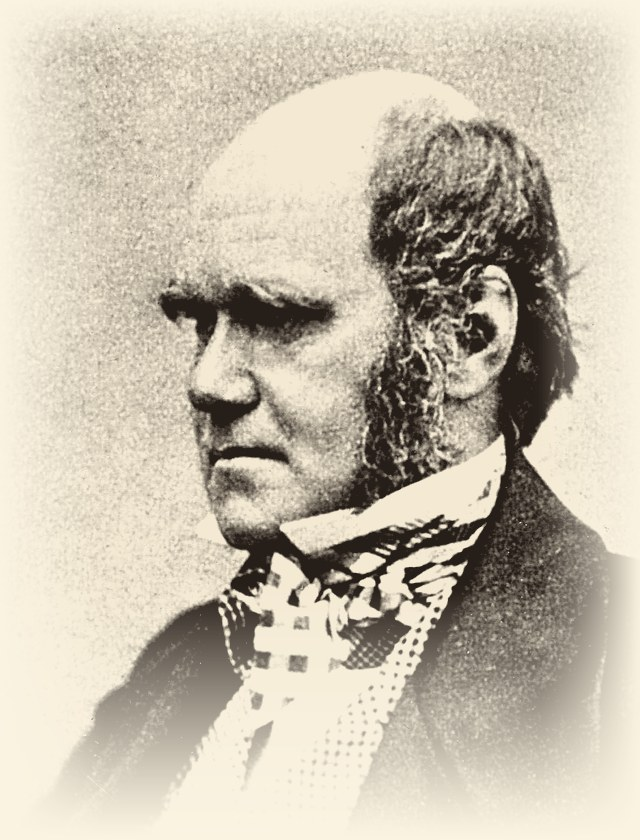
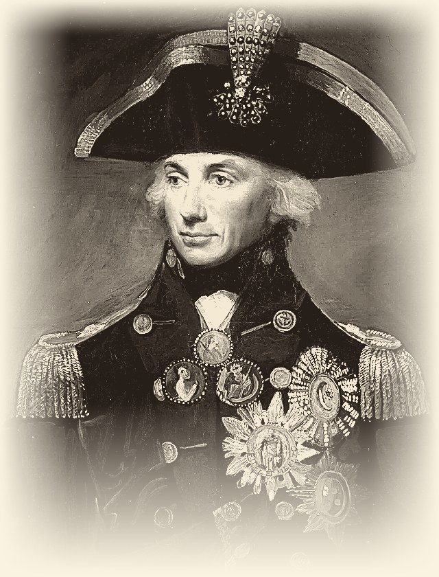
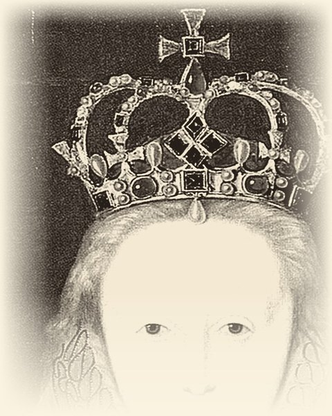

1Isaac Newton was born on December 25, 1642, in England. His childhood was difficult. His father died shortly after he was born. His mother remarried and left him with his grandmother, Marjorie. Newton lived on a boring farm and spent most of his time alone.
2His grandmother wanted him to be a farmer and take care of pigs. But Newton was not interested in farming. He preferred to watch the rain, the wind, and the grass. His grandmother did not like his “observation.” When he was 12, his mother and grandmother sent him to school. He stayed at the house of a pharmacist, Mr. Clark. There he discovered a library with books on chemistry, mathematics, and astronomy. He read many of them and learned a lot.
3After a few years, his mother took him away from school to work on the farm again. One day, he had to guard the pigs, but he was not paying attention. He was thinking about nature and the books he had read. The pigs escaped and destroyed the crops. After this failure, his uncle William convinced his mother to send Newton to Cambridge University.
4At Cambridge, Newton had to work as a servant to pay for his studies. He cleaned rooms and swept stairs, but he did not care. He read all the important science books of that time.
5In 1665, something terrible happened. The plague arrived in London from ships. Thousands of people died every day. Newton left Cambridge and returned to his family’s farm. The village was safer and cleaner. There, he had time to think and observe nature again. During this time, he made his most important discoveries.
6First, he experimented with light and colors. He bought a glass pyramid called a prism. He let a single ray of sunlight pass through it. The white light became a rainbow of many colors. He proved that white light is a combination of all colors. He also built the best telescope of his time, and the King of England congratulated him.
7Then came his most famous idea. One day, in the garden, he saw an apple fall from a tree. He asked himself: “Why do objects fall to the ground? Is there a force that pulls them?” After many calculations and experiments, he discovered the force of gravity. He understood that the Earth attracts all objects. The apple falls because of gravity. But gravity does not work only on Earth. All bodies in the universe attract each other. The planets stay in orbit around the Sun because of gravity. The Moon attracts water in our oceans and creates tides. Gravity is like a string that holds the planets in their places.
8Newton created three important laws of motion. With these laws and the law of gravity, he could explain how any object moves. He became the most famous scientist in the world, admired by kings and queens. He continued to observe nature and kept a telescope on his roof.
9Today, his formulas help us build cars, bridges, and rockets for space travel. Newton said: “Remember me and my apple.” His story is the story of a man who never stopped looking and thinking.
“Remember me and my apple.”
Isaac Newton · Exercises
I
1True, False or Not GivenCircle T, F or NG.
Newton’s father died before Newton was born.TFNG
Newton’s grandmother wanted him to become a farmer.TFNG
Newton enjoyed taking care of the pigs.TFNG
At Mr. Clark’s house Newton found a library with science books.TFNG
Newton’s uncle William was a teacher at Cambridge University.TFNG
Newton worked as a servant to pay for his studies.TFNG
Newton left Cambridge in 1665 because of the plague.TFNG
Newton proved that white light is made of only three colors.TFNG
2Fill in the gapsUse the words in the box.
applegravitymotionplagueprismpigsservanttelescope
Newton’s grandmother wanted him to take care of ____________ .
At Cambridge, Newton worked as a ____________ to pay for his studies.
In 1665 the ____________ arrived in London from ships.
He used a glass ____________ to turn white light into a rainbow.
Newton built the best ____________ of his time.
In the garden he saw an ____________ fall from a tree.
After many experiments he discovered the force of ____________ .
Newton created three important laws of ____________ .
Words to know
observation – watching something very carefully
servant – a person who works in someone else’s house
plague – a very dangerous illness that spreads quickly
prism – a piece of glass that breaks light into colours
gravity – the force that pulls objects down to the ground
orbit – the path of a planet around the Sun
tide – the rise and fall of the sea
crops – plants that farmers grow for food
Isaac Newton · Exercises
I
3Answer the questionsWrite full sentences.
Where did Newton live when he was 12?
What happened to the pigs when Newton was not paying attention?
Who convinced Newton’s mother to send him to Cambridge?
What did Newton prove about white light?
Why do the planets stay in orbit around the Sun?
What did Newton keep on the roof of his house?
4Match the two halvesWrite a, b, c, d or e.
Newton’s mother took him away from school
Newton was thinking about nature instead of watching the pigs,
A single ray of sunlight passed through the prism
The Moon attracts the water in our oceans
Today Newton’s formulas help engineers
so they escaped and destroyed the crops.
and became a rainbow of many colors.
and creates the tides.
build cars, bridges and rockets.
to work on the family farm again.
5Back to the boardFrom the game – texts face down!
Isaac Newton on the Jeopardy board
400Who was left with a grandmother as a small child?
600What did Newton create to explain how objects move?
700What did Newton do at Cambridge to pay for his studies?
Interesting People · Reading & Facts · Level A2
II
John Lennon
1940 – 1980
Musician · Songwriter · Peace activist
A voice for peace
Read the text
Paragraph numbers help you find the answers.
1John Lennon was born on October 9, 1940, in Liverpool, England. It happened during the war. He was named John Winston after his grandfather and Prime Minister Churchill. John’s parents separated, and his strict aunt Mimi raised him.
2When John was 15, his mother bought him his first guitar. Before that, he learned to play the banjo and harmonica. In 1956, he formed his first band, The Quarrymen. Later, this band became The Beatles. In 1957, John met Paul McCartney at a church party. They became great friends and wrote songs together.
3In the 1960s, The Beatles became very famous all over the world. John sang and played guitar. In 1962, he married Cynthia Powell. They had a son, Julian.
4In 1966, John said that The Beatles were more popular than Jesus. This caused a big scandal. In 1969, he returned his MBE medal to the Queen. He protested against the Vietnam War.
5In 1969, John married for the second time. His wife was artist Yoko Ono. Together, they did peace actions – “bed-ins” in Amsterdam and Montreal.
6In 1970, The Beatles broke up. John started a solo career. His first solo album came out in 1970. In 1971, he recorded his famous song “Imagine” about peace.
7In the 1970s, John had problems with the American government. President Nixon wanted to send him out of the USA because of his anti-war views. From 1973 to 1975, John lived apart from Yoko. This period is called his “lost weekend.”
8On October 9, 1975, John and Yoko had a son, Sean. It was John’s birthday on the same day! After that, John did not work as a musician for five years. He stayed at home and raised his son.
9In 1980, John came back to music with a new album, Double Fantasy. Sadly, on December 8, 1980, a crazy fan killed him outside his home in New York City. But John Lennon will always stay in people’s memory as a great musician and a fighter for peace.
“A great musician and a fighter for peace.”
John Lennon · Exercises
II
1True, False or Not GivenCircle T, F or NG.
John Lennon was born in London.TFNG
John was raised by his strict aunt Mimi.TFNG
The guitar was the first instrument John learned to play.TFNG
John met Paul McCartney at school.TFNG
Cynthia Powell sang in The Quarrymen.TFNG
John returned his MBE medal to the Queen in 1969.TFNG
John and Yoko did “bed-ins” in Amsterdam and Montreal.TFNG
Sean Lennon was born on his father’s birthday.TFNG
When John was 15, his mother bought him his first ____________ .
In 1956 he formed his first band, The ____________ .
Later this band became The ____________ .
After 1970 John started a ____________ career.
In 1971 he recorded his famous song “____________” .
John and Yoko did “bed-ins” for ____________ .
In 1975 John and Yoko had a son, ____________ .
Words to know
band – a group of musicians who play together
solo career – working alone, not in a group
to protest – to say publicly that something is wrong
scandal – something that shocks a lot of people
album – a collection of songs
to break up – to stop working together
views – the things a person believes
memory – something that people remember
John Lennon · Exercises
II
3Answer the questionsWrite full sentences.
Why was John given the name “Winston”?
Who raised John when his parents separated?
Where and when did John meet Paul McCartney?
What did John say in 1966 that caused a big scandal?
Why did President Nixon want to send John out of the USA?
What was special about Sean’s date of birth?
4Match the two halvesWrite a, b, c, d or e.
Before the guitar, John learned to play
In 1969 John returned his MBE medal
From 1973 to 1975 John lived apart from Yoko –
After Sean was born, John stayed at home
In 1980 John came back to music
this period is called his “lost weekend.”
with a new album, Double Fantasy.
to the Queen.
the banjo and the harmonica.
and did not work as a musician for five years.
5Back to the boardFrom the game – texts face down!
John Lennon on the Jeopardy board
100Who was born in Liverpool in 1940?
200What band did John Lennon help create?
500What did John Lennon do after The Beatles broke up?
Interesting People · Reading & Facts · Level A2
III
Princess Diana
1961 – 1997
Princess of Wales · Charity worker
The People’s Princess
Read the text
Paragraph numbers help you find the answers.
1Diana Frances Spencer was born on 1 July 1961 in England. She grew up in a large family with two older sisters and a younger brother. Her parents divorced when she was young.
2Diana was a quiet and shy child. She liked music, dancing and working with children. She studied in England and Switzerland but did not go to university. Before becoming a princess, she worked with children in London.
3In 1981, Diana married Prince Charles and became the Princess of Wales. They had two sons, William and Harry. Diana became very popular because she was kind, friendly and open with ordinary people.
4Diana did a lot of charity work. She visited hospitals and helped sick children, homeless people and people with HIV/AIDS. She also worked to stop the use of landmines. She used her fame to talk about important problems and help people in need.
5Diana died in a car accident in Paris on 31 August 1997. She was 36 years old. People still remember her for her kindness, courage and charity work. She was often called the “People’s Princess”. One of her famous quotes is: “Only do what your heart tells you.”
Words to know
shy – not comfortable with new people
charity work – helping people without being paid
homeless – having nowhere to live
landmine – a bomb hidden under the ground
fame – being known by very many people
kindness – being good and friendly to other people
courage – being brave when something is difficult
ordinary people – normal people, not rich or famous
“Only do what your heart tells you.”
Princess Diana · Exercises
III
1True, False or Not GivenCircle T, F or NG.
Diana was born in 1961.TFNG
Diana was the youngest child in her family.TFNG
Diana studied at a university in Switzerland.TFNG
Diana’s favourite subject at school was history.TFNG
Before she married, Diana worked with children in London.TFNG
In 1981 she married Prince Charles and became the Princess of ____________ .
Before becoming a princess, she worked with ____________ in London.
Diana did a lot of ____________ work.
She visited ____________ and helped sick children.
She also worked to stop the use of ____________ .
Diana died in a car accident in ____________ in 1997.
People often called her the “____________ Princess”.
Princess Diana · Exercises
III
3Answer the questionsWrite full sentences.
How many brothers and sisters did Diana have?
What happened to Diana’s parents when she was young?
What are the names of Diana’s two sons?
Name two groups of people that Diana helped.
Why did Diana become very popular?
How old was Diana when she died?
4Match the two halvesWrite a, b, c, d or e.
Diana grew up in a large family
She studied in England and Switzerland,
Diana used her fame
On 31 August 1997 Diana
One of her famous quotes is:
died in a car accident in Paris.
to talk about important problems and help people in need.
with two older sisters and a younger brother.
“Only do what your heart tells you.”
but she did not go to university.
5Back to the boardFrom the game – texts face down!
Princess Diana on the Jeopardy board
300What did Diana do before becoming a princess?
500Who was a quiet and shy child and liked dancing and music?
700What important work did Diana do for people with serious problems?
Interesting People · Reading & Facts · Level A2
IV

Charles Darwin
1809 – 1882
Naturalist · Geologist · Author
Ask questions. Discover the truth.
Read the text
Paragraph numbers help you find the answers.
1Charles Darwin (1809–1882) was a British scientist who studied nature and animals during the Victorian era. He was born in Shrewsbury, England, and died in Kent.
2Darwin grew up in a wealthy family. His father, a doctor, hoped Charles would follow the same path, but Charles was far more drawn to nature than to his studies. At university he showed little interest in his lessons, preferring instead to explore the natural world and collect beetles and birds. Much of what he learned came not from textbooks but from his own observations and curiosity.
3Adventurous by nature, Darwin loved exploring rainforests and climbing mountains in search of new plants and animals. At the age of 22, he joined a voyage around the world that lasted five years — a journey that would go on to change the course of science.
4Through his observations during and after the voyage, Darwin developed the theory of evolution, proposing that all living things, including humans, share common ancestors. It was a radical idea for its time, offering an answer to a question that had long puzzled naturalists: how do species change over time? His theory reshaped the way people understood the natural world.
5Later in life, Darwin married his cousin Emma, and together they had children.
6Today, Darwin’s theory remains a cornerstone of modern science and is taught in schools around the world, having fundamentally changed how we understand nature.
Words to know
nature – plants, animals and everything in the natural world
wealthy – having a lot of money
beetle – a small insect with hard wings
voyage – a long journey by ship
observation – watching something carefully to learn about it
evolution – the slow change of plants and animals over a very long time
ancestor – someone who lived a long time before you
species – a group of animals or plants of the same kind
“Much of what he learned came from his own observations and curiosity.”
Charles Darwin · Exercises
IV
1True, False or Not GivenCircle T, F or NG.
Charles Darwin was born in England.TFNG
Darwin’s father wanted him to become a doctor too.TFNG
Darwin was a very good student at university.TFNG
At university Darwin collected beetles and birds.TFNG
Darwin’s brother travelled with him on the voyage.TFNG
The voyage around the world lasted five years.TFNG
Darwin was 22 years old when he joined the voyage.TFNG
Darwin married a woman he had never met before.TFNG
At university Darwin collected ____________ and birds.
He loved exploring rainforests and climbing ____________ .
At the age of 22 he joined a ____________ around the world.
Darwin developed the theory of ____________ .
He proposed that all living things share common ____________ .
Later in life Darwin married his ____________ Emma.
Charles Darwin · Exercises
IV
3Answer the questionsWrite full sentences.
Where was Charles Darwin born?
What did Darwin’s father hope his son would become?
What did Darwin collect instead of studying his lessons?
How old was Darwin when he joined the voyage around the world?
What did Darwin’s theory say about all living things?
Who did Darwin marry?
4Match the two halvesWrite a, b, c, d or e.
Darwin’s father was a doctor and hoped
At university Darwin was more interested in nature
The voyage around the world
Darwin’s theory says that humans and animals
Today Darwin’s theory
lasted five years.
that Charles would follow the same path.
is taught in schools around the world.
than in his lessons.
share common ancestors.
5New for the boardNot on your board yet – add these three.
Three questions to add for Charles Darwin
400Who joined a voyage around the world at the age of 22?
600What is the name of Darwin’s famous theory?
800Who did Charles Darwin marry?
Interesting People · Reading & Facts · Level A2
V

Horatio Nelson
1758 – 1805
Naval officer · Vice-Admiral · National hero
A national hero at sea
Read the text
Paragraph numbers help you find the answers.
1Horatio Nelson was a famous British naval officer who lived from 1758 to 1805. He was born on 29 September 1758 in a small village called Burnham Thorpe in England.
2Nelson joined the Royal Navy when he was only 12 years old. He loved the sea and wanted to become a brave and successful sailor. Nelson was not very tall, but he was a strong leader with great courage.
3During his career, he fought in many important battles at sea. He lost the sight in his right eye during a battle in 1794. In 1797, he lost his right arm during the Battle of Santa Cruz de Tenerife. Even after these injuries, Nelson returned to the sea and continued his career. He became famous for his clever plans and unusual ideas in naval battles.
4One of his greatest victories came at the Battle of the Nile in 1798. In this battle, Nelson defeated a large French fleet in Egypt. His most famous battle was the Battle of Trafalgar on 21 October 1805. Nelson led the British fleet against the French and Spanish fleets near the coast of Spain. The British won the battle, but Nelson was badly wounded by an enemy bullet. He died on his ship, HMS Victory, on the same day at the age of 47.
5Nelson became a national hero, and people still remember him for his courage and leadership. Today, Nelson’s Column in Trafalgar Square, London, is a famous monument to this remarkable sailor.
Words to know
navy – the ships and people that protect a country at sea
sailor – a person who works on a ship
battle – a fight between armies or ships
fleet – a large group of ships
courage – being brave when something is dangerous
wounded – badly hurt in a battle
hero – someone people admire for brave actions
monument – something built to remember a person
“He lost an eye and an arm, and went back to sea.”
Horatio Nelson · Exercises
V
1True, False or Not GivenCircle T, F or NG.
Nelson was born in a big city.TFNG
Nelson joined the Royal Navy when he was 12.TFNG
Nelson was a very tall man.TFNG
Nelson’s father was also a sailor.TFNG
Nelson lost his right arm in 1797.TFNG
Nelson stopped working after his injuries.TFNG
The Battle of Trafalgar took place in 1805.TFNG
Nelson died on his ship.TFNG
2Fill in the gapsUse the words in the box.
armcourageeyefleetmonumentNavyTrafalgarVictory
Nelson joined the Royal ____________ when he was 12.
He lost the sight in his right ____________ during a battle in 1794.
In 1797 he lost his right ____________ .
At the Battle of the Nile he defeated a large French ____________ .
His most famous battle was the Battle of ____________ .
Nelson died on his ship, HMS ____________ .
People remember him for his ____________ and leadership.
Nelson’s Column is a famous ____________ in London.
Horatio Nelson · Exercises
V
3Answer the questionsWrite full sentences.
Where was Nelson born?
How old was Nelson when he joined the Royal Navy?
What happened to Nelson in 1794 and in 1797?
Which fleet did Nelson defeat at the Battle of the Nile?
What was the name of Nelson’s ship?
Which monument in London remembers Nelson?
4Match the two halvesWrite a, b, c, d or e.
Nelson joined the Royal Navy
He lost the sight in his right eye
At the Battle of the Nile Nelson
At Trafalgar the British won, but Nelson
Nelson’s Column in Trafalgar Square
during a battle in 1794.
defeated a large French fleet in Egypt.
when he was only 12 years old.
is a famous monument to this sailor.
was badly wounded by an enemy bullet.
5Back to the boardFrom the game – texts face down!
Horatio Nelson on the Jeopardy board
100What was Nelson’s job?
200Who was born in England on 29 September 1758?
300Who became a national hero in Britain?
Interesting People · Reading & Facts · Level A2
VI
Elizabeth I
1533 – 1603
Queen of England · The Virgin Queen
She kept the power herself
Read the text
Paragraph numbers help you find the answers.
1Elizabeth was born in 1533. Her parents were King Henry VIII and Anne Boleyn. Her father was not happy because he wanted a son. When Elizabeth was two years old, her mother was killed. The young girl went to live at Hatfield Palace, where she got a very good education. By the age of thirteen, she spoke several languages and was a good writer.
2She became queen in 1558. Many men from different countries wanted to marry her, but she said no to all of them. She never married because she wanted to keep all the power herself. During her reign, she had a big conflict with Spain. Spain was a big, rich, and Catholic country, but England was smaller and Protestant. In the 1580s, the two countries fought at sea. English sailors were fast and clever, so Spain never won.
3The Queen had time for other things and loved the theatre very much. Her favourite writer was William Shakespeare, and his actors often performed plays at her palace. As a young woman, Elizabeth was ill with smallpox, and the illness left marks on her face. To hide them, she covered her face with thick white make-up and wore a big orange wig.
4Elizabeth died on 24 March 1603. She was queen for 44 years. Nobody knows exactly why she died, but the white make-up was a poison, and it perhaps killed her slowly. Today, she is buried in Westminster Abbey.
Words to know
education – learning at school or with teachers
power – being able to decide and to give orders
reign – the years when a king or a queen rules
conflict – a serious quarrel or fight between two sides
sailor – a person who works on a ship
smallpox – a dangerous illness that leaves marks on the skin
make-up – colour that people put on the face
wig – false hair that a person wears on the head
“She said no to all of them, and kept the power herself.”
Elizabeth I · Exercises
VI
1True, False or Not GivenCircle T, F or NG.
Elizabeth’s father wanted a daughter.TFNG
Elizabeth’s mother was killed when Elizabeth was two years old.TFNG
Elizabeth got a very good education at Hatfield Palace.TFNG
Elizabeth spoke only one language.TFNG
Elizabeth’s teachers came from other countries.TFNG
Elizabeth married a king from another country.TFNG
Spain never won the war at sea.TFNG
Elizabeth was queen for more than forty years.TFNG
1 WHO IS IT? 1 L · 2 N · 3 D · 4 N · 5 L · 6 D · 7 N · 8 L · 9 D · 10 N
2 ORDERElizabeth I → Isaac Newton → Horatio Nelson → John Lennon → Princess Diana
Numbers to write in the boxes,
top to bottom as printed: 5 · 2 · 4 · 3 · 1
3 NUMBERS 1 e · 2 h · 3 b · 4 c · 5 d · 6 a · 7 f · 8 g
4 FINAL JEOPARDY
No single correct answer. Accept any person if the student gives a reason
and an example from the text.
Teacher’s Notes · Checks & Corrections
VIII
Before you print
Wild Card 600 – wrong answer on the game slideThe board answers “Newton → Nelson → Elizabeth → Lennon → Diana”. By year of birth the correct order is Elizabeth I (1533) → Newton (1642) → Nelson (1758) → Lennon (1940) → Diana (1961). Task 2 on Sheet VII uses the corrected order.
Childhood & Early Life 300 – pronoun mismatchThe slide asks “Who was raised by her strict aunt Mimi?” but the answer is John Lennon. It should read his. Corrected in this pack.
Newton’s text – three points that differ from the historical record(1) In the text the grandmother wants him to farm; historically it was his mother Hannah who took him out of school to run the farm. (2) A prism is a triangular prism, not a “pyramid”. (3) Newton’s reflecting telescope (1671) impressed the Royal Society, which led to his election as a Fellow; there is no reliable source for the king congratulating him. The exercises test the text as written, so students are never marked wrong for these.
SpellingThe Newton text uses American spellings (“colors”) while the rest of the pack and the game use British ones (“colours”). Left as in the original. Change it in build/content.py if you want one convention throughout.
How the pack maps onto the game
Every item on the person sheets and on the Mixed Round is built on a fact that appears on the Jeopardy
board, so the handouts and the game test the same knowledge. The exception is Charles Darwin (Sheet IV) – not on your board at all, so task 5 there offers three questions you can add to it instead.
Suggested order: read the sheet → do the exercises → play the game with the texts face down.
Image credits & licencesIsaac Newton – portrait by Godfrey Kneller, 1689.
Public domain. Via Wikimedia Commons. John Lennon – photograph by Joost Evers / Anefo, 1969.
Released under CC0 1.0 (public domain dedication). Via Wikimedia Commons. Princess Diana – photograph by John Mathew Smith
(www.celebrity-photos.com), 1997. Licensed CC BY-SA 2.0;
this pack reproduces it in duotone as a derivative work under the same licence.
Via Wikimedia Commons.
Type: Cinzel, Playfair Display, EB Garamond – SIL Open Font License 1.1.
Past Simple · Grammar · Level A2
IX
Isaac Newton
1642 – 1727
Past Simple
1Choose the correct answerCircle a, b or c.
Isaac Newton ____ born in England in 1642.
a)isb)wasc)were
He ____ mathematics at Trinity College, Cambridge.
a)studiedb)studyedc)study
Newton ____ like farming.
a)wasn’tb)didn’tc)doesn’t
In 1668 he ____ the first reflecting telescope.
a)buildb)buildedc)built
____ Newton write the Principia in Latin?
a)Didb)Wasc)Does
He ____ the Principia in 1687.
a)writedb)wrotec)written
Newton ____ President of the Royal Society in 1703.
a)becomeb)becomedc)became
Queen Anne ____ him a knight in 1705.
a)madeb)makedc)make
____ he interested in light and colours?
a)Didb)Wasc)Were
Where ____ Newton study?
a)wasb)didc)does
Newton ____ in London in 1727.
a)dieb)diedc)was died
People ____ him in Westminster Abbey.
a)buriedb)buryedc)bury
2Put the verb into the Past SimpleUse the verb in brackets.
Isaac Newton (be) born in Lincolnshire, England.
He (study) at Trinity College, Cambridge.
Newton (not / like) farming.
In 1668 he (build) the first reflecting telescope.
He (write) the Principia in Latin.
(he / become) President of the Royal Society in 1703?
Queen Anne (make) him a knight in 1705.
Newton (not / publish) the Principia in English.
When (Newton / die)?
People (bury) him in Westminster Abbey.
Past Simple · Grammar · Level A2
X
John Lennon
1940 – 1980
Past Simple
1Choose the correct answerCircle a, b or c.
John Lennon ____ born in Liverpool in 1940.
a)wereb)wasc)is
He ____ his first band, The Quarrymen, in 1956.
a)formedb)formdc)form
John ____ Paul McCartney in 1957.
a)meetedb)metc)meet
____ the Beatles come from Liverpool?
a)Wasb)Didc)Do
The Beatles ____ to the United States in 1964.
a)gob)goedc)went
John ____ Yoko Ono in 1969.
a)marryedb)marriedc)marry
He ____ to New York in 1971.
a)movedb)movenc)move
The Beatles ____ stay together after 1970.
a)weren’tb)didn’tc)don’t
When ____ John write “Imagine”?
a)didb)wasc)does
He ____ a lot of songs about peace.
a)singedb)sangc)sung
____ John and Yoko famous?
a)Didb)Wasc)Were
John Lennon ____ in New York in 1980.
a)dieb)diedc)was died
2Put the verb into the Past SimpleUse the verb in brackets.
John Lennon (be) born in Liverpool.
In 1956 he (form) a band called The Quarrymen.
He (meet) Paul McCartney in 1957.
John (study) at Liverpool College of Art.
The Beatles (go) to the United States in 1964.
(John / marry) Yoko Ono in 1969?
He (move) to New York in 1971.
The Beatles (not / stay) together after 1970.
Where (John / live) after 1971?
John and Yoko (be) famous all over the world.
Past Simple · Grammar · Level A2
XI
Princess Diana
1961 – 1997
Past Simple
1Choose the correct answerCircle a, b or c.
Diana ____ born on 1 July 1961.
a)wereb)wasc)is
Before her marriage she ____ in a nursery school in London.
a)workedb)workdc)work
She ____ Prince Charles in 1981.
a)marryb)marryedc)married
She ____ two sons, William and Harry.
a)havedb)hasc)had
Diana ____ go to university.
a)wasn’tb)didn’tc)doesn’t
____ Diana marry Prince Charles in 1981?
a)Wasb)Doesc)Did
She ____ many hospitals and helped sick children.
a)visitedb)visittedc)visit
Diana and Charles ____ in 1996.
a)divorceb)divorcdc)divorced
Where ____ Diana work before her marriage?
a)wasb)didc)does
She ____ about important problems on television.
a)spokeb)speakedc)speak
____ William and Harry her sons?
a)Wasb)Werec)Did
Diana ____ in Paris in 1997.
a)dieb)diedc)was died
2Put the verb into the Past SimpleUse the verb in brackets.
Diana Frances Spencer (be) born in 1961.
She (work) with young children in London.
Diana (marry) Prince Charles in 1981.
Many people around the world (watch) her wedding on television.
William and Harry (be) her two sons.
Diana (not / go) to university.
(she / help) people with HIV/AIDS?
She (speak) about landmines.
Where (Diana / work) before her marriage?
Diana (not / work) in a hospital, but she (visit) many.
Past Simple · Grammar · Level A2
XII

Elizabeth I
1533 – 1603
Past Simple
1Choose the correct answerCircle a, b or c.
Elizabeth ____ born in Greenwich in 1533.
a)isb)wasc)were
She ____ the daughter of Henry VIII and Anne Boleyn.
a)wasb)werec)did
She ____ Latin, French and Italian as a child.
a)studiedb)studyedc)study
In 1554 her sister Mary ____ her in the Tower of London.
a)did putb)puttedc)put
____ Elizabeth become queen in 1558?
a)Didb)Wasc)Does
She ____ queen for 44 years.
a)wereb)wasc)did
Elizabeth ____ marry.
a)wasn’tb)didn’tc)don’t
In 1588 the English ____ the Spanish Armada.
a)beatb)beatedc)beaten
____ the queen interested in the theatre?
a)Didb)Wasc)Were
Where ____ Elizabeth live when she was a child?
a)wasb)didc)does
She ____ a big orange wig.
a)wearedb)wearc)wore
Elizabeth ____ in 1603.
a)dieb)was diedc)died
2Put the verb into the Past SimpleUse the verb in brackets.
Elizabeth (be) born in Greenwich in 1533.
She (study) Latin, French and Italian as a child.
In 1554 her sister Mary (send) her to the Tower of London.
Elizabeth (become) queen in 1558.
(she / marry) a king or a prince?
Elizabeth (not / marry) anybody.
In 1588 the English (beat) the Spanish Armada.
The queen (love) the theatre and music.
How long (Elizabeth / rule) England?
She (not / give) her power to a husband, but she (keep) it.
Past Simple · Grammar · Level A2
XIII
Mixed Practice
Newton · Lennon · Diana
Past Simple
1Choose the correct answerCircle a, b or c.
Isaac Newton ____ born in 1642, and John Lennon ____ born in 1940.
a)was / wasb)were / wasc)was / were
Diana ____ Prince Charles in 1981.
a)marryb)marriedc)marryed
____ Newton study at Cambridge?
a)Wasb)Doesc)Did
The Beatles ____ to the United States in 1964.
a)wentb)goedc)go
Newton ____ the Principia in English.
a)wasn’t writeb)didn’t writec)didn’t wrote
Where ____ Diana work before her marriage?
a)didb)wasc)does
John Lennon ____ to New York in 1971.
a)moveb)movenc)moved
Queen Anne ____ Newton a knight in 1705.
a)makeb)makedc)made
____ William and Harry Diana’s sons?
a)Wasb)Werec)Did
Diana ____ go to university.
a)didn’tb)wasn’tc)doesn’t
John Lennon ____ Paul McCartney in 1957.
a)meetedb)metc)meet
Newton ____ President of the Royal Society in 1703.
a)becameb)becomedc)become
When ____ John Lennon die?
a)wasb)doesc)did
Diana and Charles ____ in 1996.
a)divorceb)divorcedc)divorcd
All three people ____ famous in Britain.
a)wasb)werec)did
2Make the questionPut the words in the right order.
born / when / Newton / was / ?
did / where / Diana / work / ?
Lennon / did / meet / who / in 1957 / ?
the Beatles / did / go / to the United States / when / ?
Diana’s / were / who / sons / ?
Newton / did / write / what / in 1687 / ?
Past Simple · All Three Together
XIII
3Put the verb into the Past SimpleUse the verb in brackets.
Isaac Newton (be) born in England in 1642.
John Lennon and Paul McCartney (meet) in 1957.
Diana (work) with children before she (marry) Prince Charles.
Newton (not / write) the Principia in English.
(the Beatles / go) to the United States in 1964?
Queen Anne (make) Newton a knight in 1705.
William and Harry (be) Diana’s two sons.
John Lennon (move) to New York in 1971.
When (Diana / die)?
Diana (not / go) to university.
Newton (build) the first reflecting telescope in 1668.
All three people (become) famous around the world.
4Irregular verbsWrite the Past Simple form.
be → ______________
become → ______________
build → ______________
go → ______________
have → ______________
make → ______________
meet → ______________
sing → ______________
speak → ______________
write → ______________
Grammar Answer Key · For the teacher
XIV
Sheet IX · Isaac Newton
1 CHOOSE 1 b · 2 a · 3 b · 4 c · 5 a · 6 b · 7 c · 8 a · 9 b · 10 b · 11 b · 12 a
2 PAST SIMPLE
was
studied
did not like / didn’t like
built
wrote
Did he become
made
did not publish / didn’t publish
did Newton die
buried
Sheet X · John Lennon
1 CHOOSE 1 b · 2 a · 3 b · 4 b · 5 c · 6 b · 7 a · 8 b · 9 a · 10 b · 11 c · 12 b
2 PAST SIMPLE
was
formed
met
studied
went
Did John marry
moved
did not stay / didn’t stay
did John live
were
Sheet XI · Princess Diana
1 CHOOSE 1 b · 2 a · 3 c · 4 c · 5 b · 6 c · 7 a · 8 c · 9 b · 10 a · 11 b · 12 b
2 PAST SIMPLE
was
worked
married
watched
were
did not go / didn’t go
Did she help
spoke
did Diana work
(1) did not work / didn’t work (2) visited
Sheet XII · Elizabeth I
1 CHOOSE 1 b · 2 a · 3 a · 4 c · 5 a · 6 b · 7 b · 8 a · 9 b · 10 b · 11 c · 12 c
1 CHOOSE 1 a · 2 b · 3 c · 4 a · 5 b · 6 a · 7 c · 8 c · 9 b · 10 a · 11 b · 12 a · 13 c · 14 b · 15 b
2 MAKE THE QUESTION
When was Newton born?
Where did Diana work?
Who did Lennon meet in 1957?
When did the Beatles go to the United States?
Who were Diana’s sons?
What did Newton write in 1687?
3 PAST SIMPLE
was
met
(1) worked (2) married
did not write / didn’t write
Did the Beatles go
made
were
moved
did Diana die
did not go / didn’t go
built
became
Sheet XIII · task 4
be → was / were · become → became · build → built · go → went · have → had · make → made · meet → met · sing → sang · speak → spoke · write → wrote
How these sheets relate to Sheets I–VIThese sheets do not follow the reading texts – they are free-standing Past Simple practice about the same three people, so they can be used before, after or without Sheets I–VI. Every fact was checked against the subject’s Wikipedia article. Where a well-known story could not be confirmed there – Diana’s ungloved handshake with an AIDS patient, her walk through the Angolan minefield – it was left out, and only the general facts are used. Newton’s father is never mentioned: the reading text and the historical record disagree about when he died, and a grammar item resting on that would quietly contradict Sheet I.
Marking the negatives and questions
Both the full and the contracted form are correct: did not like and didn’t like
are equally right, and so are was not and wasn’t. The key prints both, separated
by a slash. In task 2 the capital letter at the start of a question is part of the answer.
Monday 14 September · Elizabeth I · WHAT MAKES A GREAT PERSON?
PLAN
Lesson Plan
Monday 14.09.2026 · two and a half sessions · level A2
The day
11.00 – 11.45
Revision: your hero + Past Simple
45 min
11.45 – 12.00
Break
15 min
12.00 – 13.35
Preparing the presentation
95 min
13.35 – 14.05
Lunch
30 min
14.05 – 15.40
Plenary · presentations · awards
95 min
By the end of the day students can
recall the life of Elizabeth I and re-tell it in the Past Simple
listen to a three-minute A2 talk and take the facts out of it
build their own criteria for WHAT MAKES A GREAT PERSON and defend them
find evidence for and against Elizabeth’s greatness in what she actually did
give a ten-minute team presentation in English with a clear line of argument
judge other teams against the same criteria and vote for the award winners
On the table before you start
Sheet VI
Elizabeth I – reading, exercises, board call-backs
1 per student
Sheet XII
Past Simple on Elizabeth I
1 per student
Listening sheet
“The Queen Who Said No” – worksheet
1 per student
Audio script
read aloud by the teacher – keys on the back
teacher only
Great Person sheet
criteria, evidence grid, the greatness test
1 per student
Presentation kit
roles, timing plan, sentence frames, checklist
1 per student
Feedback cards
cut into four · voting slips at the bottom
1 per student
Certificates
cut in half · fill the names in at lunch
4 per group
Answer keys
reading key and grammar key from the pack
teacher only
Notes for the teacher
If you are running lateCut “The greatness test” to five minutes and set task 2 of the grammar sheet as homework. Do not cut Rehearsal 1 – an unrehearsed ten minutes always becomes fourteen.
Monday 14 September · Elizabeth I · WHAT MAKES A GREAT PERSON?
PLAN
Session 1 · 11.00 – 11.45 · revision and Past Simple
11.00
5′
Warmer · three facts Books closed. In pairs, write down everything you remember about Elizabeth I in three minutes. Then count: the pair with the most correct facts wins.
PAIRS
11.05
10′
Reading recall Sheet VI, page 2, task 1 (True / False / Not Given). Students may re-read page 1 first for two minutes, then close it. Check as a class; ask “which paragraph?” every time.
IND → CLASS
11.15
13′
Listening · The Queen Who Said No Listening sheet. Task 1 (words) before you read anything aloud. Read the script once at normal speed – students do task 2 only. Read it a second time, slightly slower, pausing at the || marks – students do tasks 3 and 4. Check in pairs, then as a class.
IND → PAIRS
11.28
12′
Past Simple Sheet XII. Task 1 (choose a, b or c) against the clock – six minutes, then swap sheets and mark. Task 2 (verbs in brackets): items 1–5 now, 6–10 as homework if time is short. Board the three shapes: was/were · -ed / irregular · did + infinitive.
IND → PAIRS
11.40
5′
Set the big question Write on the board: WHAT MAKES A GREAT PERSON? Each student writes one word that must be in the answer. Collect the words on the board – do not discuss them yet. Tell them these words come back after the break.
CLASS
Session 2 · 12.00 – 13.35 · preparing the presentation
12.00
12′
My criteria Great Person sheet, task 1. Alone: tick your five. In the team: agree on three and write them in the box. The team must be able to say why each one is in and why one popular word was left out.
IND → TEAM
12.12
18′
Evidence hunt Great Person sheet, task 2. Go back to Sheet VI and the listening. For each criterion find something Elizabeth did, with a year. No year, no evidence.
TEAM
12.30
10′
The greatness test Great Person sheet, task 3. Four things Elizabeth really did – two that look great and two that do not. Rate each one against your own criteria. This is where the presentation gets its honesty, and it is what separates a report from an argument.
TEAM
12.40
10′
Roles and the clock Presentation kit, page 1. Fill in the timing plan with real names. Six roles, ten minutes. Everybody speaks. Nobody speaks for more than two and a half minutes.
TEAM
12.50
25′
Write your part Presentation kit, page 2. Each student drafts their own part using the sentence frames. Teacher circulates and corrects Past Simple forms only – leave everything else.
IND
13.15
15′
Rehearsal 1 Full run with a stopwatch. One student holds the checklist and ticks. Stop at ten minutes even if they are not finished – that is the point of the exercise.
TEAM
13.30
5′
Fix list Three things to change, written at the bottom of the kit. Not more than three.
TEAM
Monday 14 September · Elizabeth I · WHAT MAKES A GREAT PERSON?
Set up Hand out the feedback cards, one per student, already cut. Explain the three awards and that everyone votes at the end.
CLASS
14.10
70′
Presentations About ten minutes per team plus two minutes of questions. The audience fills in one feedback card per team. Teacher keeps time visibly and does not interrupt.
PLENARY
15.20
10′
Voting and counting Students tear off the three slips and post them. Two students count while the teacher gives whole-class feedback on the English – three things that worked, three to fix.
CLASS
15.30
10′
Awards and close Read out the certificates. One or two “most active” per group, the debate winners and the winners of the game. Close by reading three of the morning’s words from the board and asking whether the day changed anybody’s answer.
CLASS
Notes for the teacher
The difficult sentence in the audioThe script says that Elizabeth’s father had her mother killed. That is what happened: Anne Boleyn was beheaded on 19 May 1536, when Elizabeth was two years and eight months old. Say it plainly, do not dwell on it, and move on to what the child did next – she studied.
The Tilbury quotation“I know I have the body but of a weak, feeble woman; but I have the heart and stomach of a king” – Tilbury, 9 August 1588. Most historians accept the speech as genuine; a minority doubt the text. If a student asks whether she really said it, the honest answer is “probably, and that is a good question”.
Two facts the original class text had wrongElizabeth died on 24 March 1603, not the 14th, and she was queen for 44 years, not 45 (17 November 1558 to 24 March 1603). Both are corrected on every sheet in this pack.
The awards, in order
Read the certificate out, say the one thing the person did that earned it, then hand it
over. One or two “most active” per group as agreed, then the debate winners, then
the winners of the game. Keep it to ninety seconds a name – the applause is the reward,
the paper is the souvenir.
Closing the intensive
Go back to the board and read out three of the words the group wrote at 11.40. Ask one
question and stop: after today, would you keep your word, or change it? Take three
answers. Do not sum up for them.
Monday 14 September · Elizabeth I · WHAT MAKES A GREAT PERSON?
LISTEN
The Queen Who Said No
Listening · A2 · you will hear the talk twice
1Before you listenMatch the word to its meaning. Write a–h.
a palace
a tower
to crown somebody
a fleet
brave
power
free
a play
a tall building – this one was a prison
to put a crown on a new king or queen
a story that actors show in a theatre
when you can decide things and other people must do them
a very big house where a king or a queen lives
not afraid of danger
a large group of ships
when you can go where you want
2First listeningTick the FIVE things the talk speaks about.
her mother
her horses
the Tower of London
her school in Spain
the ships from Spain
the theatre
her children
the next king
3Second listeningCircle T, F or NG.
Elizabeth was born in London.TFNG
Her father was King Henry VIII.TFNG
She learned three foreign languages.TFNG
Her sister Mary sent her to the Tower of London.TFNG
She was twenty-five years old when she became queen.TFNG
She married a prince from Spain.TFNG
She wrote a play with Shakespeare.TFNG
A king from Scotland became king after her.TFNG
Monday 14 September · Elizabeth I · WHAT MAKES A GREAT PERSON?
LISTEN
4The numbersWrite a–g next to each number.
1533
1554
1558
1588
1603
44
25
the year of the Armada
the year she became queen
the year she died
the year Elizabeth was born
the number of years she was queen
her age when she became queen
the year her sister sent her to the Tower
5After you listenTalk in your team, then write.
The talk ends with three words about Elizabeth: clever, brave, and she said no. Which of the three is the most important? Why?
Elizabeth said no to every man who wanted to marry her. Was that a brave choice or a cold one? Give one reason.
The programme does not say anything bad about Elizabeth. Is that honest? What would you add to the talk?
Write one sentence: A person is great when …
Monday 14 September · Elizabeth I · WHAT MAKES A GREAT PERSON?
AUDIO
Audio Script
Read aloud by the teacher · for the teacher only
A2 · about 310 words · 3 minutes at reading speed · read twice: once at normal speed, once pausing at ||
1Hello, and welcome to Great Lives. Today: a queen who ruled England for forty-four years. ||
2Elizabeth was born on the seventh of September, fifteen thirty-three, at Greenwich Palace, near London. Her father was King Henry the Eighth. Her mother was Anne Boleyn. When Elizabeth was two years old, her father had her mother killed. People said the little girl was not a real princess. ||
3But Elizabeth was clever. She studied with a famous teacher, Roger Ascham. She learned Latin, French and Italian. She read and she read and she read. ||
4Life was not safe. In March fifteen fifty-four her sister Mary sent her to the Tower of London. Elizabeth stayed in the Tower for about two months. After that she lived in the country for almost a year, and soldiers watched her door. She was not free. ||
5Everything changed in fifteen fifty-eight. Mary died, and on the seventeenth of November Elizabeth became queen. She was twenty-five years old. In January fifteen fifty-nine they crowned her in Westminster Abbey. ||
6Many men wanted to marry her. Kings and princes sent her letters and pictures. Elizabeth said no. She said no to all of them, and she kept the power herself. Today people call her the Virgin Queen. ||
7In fifteen eighty-eight the King of Spain sent a great fleet of ships – the Armada – against England. Elizabeth went to Tilbury and spoke to her soldiers. She said: “I know I have the body but of a weak, feeble woman; but I have the heart and stomach of a king.” The Armada lost. ||
8Elizabeth loved the theatre. In her time William Shakespeare and Christopher Marlowe wrote their plays, and people still watch them today. ||
9Elizabeth died on the twenty-fourth of March, sixteen oh three, at Richmond Palace. She was queen for forty-four years. King James of Scotland became the next king of England. ||
10So – what makes a great person? Think about Elizabeth. She was clever. She was brave. And she said no.
How to read it
First reading: normal speed, no stopping, students only tick task 2. Second reading: slow
down a little and pause where you see ||. If the group is weak,
read paragraph 7 a third time on its own – the quotation is the hardest line on the sheet.
Monday 14 September · Elizabeth I · WHAT MAKES A GREAT PERSON?
AUDIO
Listening sheet · answer key
1 BEFORE YOU LISTEN 1 e · 2 a · 3 b · 4 g · 5 f · 6 d · 7 h · 8 c
4 THE NUMBERS 1 d · 2 g · 3 b · 4 a · 5 c · 6 e · 7 f
5 AFTER
Open answers. Item 3 is the one to push on: the talk really does leave out everything
difficult, and noticing that is the skill the afternoon needs.
Why item 7 of task 3 is Not Given
The talk says Shakespeare wrote his plays in her time. It never says she met him or wrote
with him. Students who answer F are reading the world, not the text; students who answer T
are reading a film. Both are worth thirty seconds of discussion.
If you would rather not read it yourself
The script is plain text and works in any text-to-speech tool; a British English voice at
0.9 speed is close to the timing above. There is no recording in this pack.
Three more ways to use the same script
1 · Running dictation · 8 minutes
Cut the script into its ten paragraphs and tape them to the walls. One student in each pair
runs, reads, comes back and dictates; the other writes. Swap after every paragraph. Then they
compare their text with the real one and count the differences. It is loud, and it is the
fastest reading-and-spelling exercise there is.
2 · Shadowing paragraph 7 · 4 minutes
Read the Tilbury paragraph one line at a time; the class repeats it back at the same speed
and with the same stress. Then one volunteer stands up and says the quotation alone. Nobody
forgets a sentence they have said standing up.
3 · Retell relay · 6 minutes
Books closed. Student 1 gives one sentence of the life, in the Past Simple. Student 2 gives
the next. Any wrong tense and the chain goes back to the start. Three complete chains and
the group owns the story.
Where the facts come from
Checked on 13.09.2026
Every date, name and number in the script is in the English Wikipedia article
“Elizabeth I”: born 7 September 1533 at Greenwich Palace; Anne Boleyn beheaded
19 May 1536; tutored by Roger Ascham; sent to the Tower on 18 March 1554 and moved to
Woodstock on 22 May; queen from 17 November 1558, crowned 15 January 1559; the Armada
defeated in 1588; Shakespeare and Marlowe writing in her reign; died 24 March 1603 at
Richmond Palace; succeeded by James VI of Scotland. The Tilbury quotation is from the
article “Speech to the Troops at Tilbury”, 9 August 1588 – accepted as genuine by
most historians, doubted by a minority. The class text’s “14 March” and
“45 years” are wrong and are corrected here.
Monday 14 September · Elizabeth I · WHAT MAKES A GREAT PERSON?
GREAT
What Makes a Great Person?
Session 2 · build your criteria, then test them
1Your criteriaTick five alone. Then agree on three as a team.
courage – doing the right thing when it is dangerous
intelligence – seeing what other people do not see
hard work – years of it, not one good day
kindness – caring about people with no power
never giving up
changing other people’s lives for the better
being honest, also when it costs something
being famous – everybody knows your name
having power – you can decide things
being remembered a long time after you die
Our team’s three criteria
Why this one and not another?
2Evidence huntNo year, no evidence.
#
Criterion
What Elizabeth actually did
Year
1
2
3
Monday 14 September · Elizabeth I · WHAT MAKES A GREAT PERSON?
GREAT
3The greatness testFour things she really did. Score each 1–3 against YOUR criteria.
1 2 3She said no to every marriage and kept the power herself (1558–1603).Nobody ruled England through her. But she had no child, and after her death the crown went to Scotland.
1 2 3She sent her ships against the Spanish Armada and spoke to the soldiers herself at Tilbury (1588).England won. But the war was expensive, and she was careful with money for her soldiers afterwards.
1 2 3After the rising in the north of England in 1569, more than 750 people were executed on her orders.She kept the country quiet. Think about the price.
1 2 3From 1581, to make an English person a Catholic was treason, and treason meant death.She said it was about the state, not about God. Her enemies said it was about God.
4Both sidesA team that cannot argue the other side has not understood its own.
Motion: “Elizabeth I was a great person.” Write three arguments on each side. You will need the right-hand column when you present.
FOR – because she …
AGAINST – but she …
Where the hard facts in task 3 come fromWhere the hard numbers in task 3 come from: the 750+ executions after the 1569 Rising of the North and the 1581 treason law are both stated in the Wikipedia article “Elizabeth I”, which also records that she at first resisted calls for the execution of Mary, Queen of Scots, signed the warrant in 1586, and afterwards blamed her secretary for sending it – and that historians have questioned how sincere that was. The article also notes that economic and military problems weakened her popularity late in the reign, and that some historians read her as short-tempered and sometimes indecisive. None of this is on the reading sheet; it is here so that a team that wants to argue the hard side can be given something real.
Monday 14 September · Elizabeth I · WHAT MAKES A GREAT PERSON?
STAGE
Ten Minutes on Stage
Six roles · everybody speaks · nobody runs over
1Who does whatWrite a real name in the last column.
1
The Opener
0:00 – 0:40
Name the person and ask the big question. No biography yet.
name
2
The Story-teller
0:40 – 2:40
Five or six moments of the life, in order, all in the Past Simple, all with years.
name
3
The Evidence-giver
2:40 – 5:00
Your three criteria, and one thing Elizabeth did for each one. Year every time.
name
4
The Other Side
5:00 – 6:30
What was not great. One or two real examples from the greatness test.
name
5
The Closer
6:30 – 8:00
Your team’s answer to WHAT MAKES A GREAT PERSON, and where Elizabeth lands on it.
name
6
The Question-taker
8:00 – 10:00
Take questions from the room. You may ask the rest of the team to help.
name
2Rehearsal checklistOne student holds this and ticks during the run.
Every member of the team speaks.
Nobody speaks for longer than two and a half minutes.
The big question is asked in the first minute.
Every date is said out loud, not only shown.
Every fact about the past is in the Past Simple.
Three criteria, three pieces of evidence, in that order.
At least one honest point against your own person.
The last sentence answers the big question directly.
You finish inside ten minutes.
You look at the room, not at the paper.
3The fix listThree things. Three.
After rehearsal 1 – three things we change (not four)
Monday 14 September · Elizabeth I · WHAT MAKES A GREAT PERSON?
STAGE
Sentence frames – steal these
Opening
Our person is Elizabeth the First, Queen of England from 1558 to 1603.
Before we begin, one question: what makes a person great?
Today we will give you our answer, and three pieces of evidence.
Telling the story (Past Simple)
She was born in 1533 at Greenwich Palace.
In 1554 her sister sent her to the Tower of London.
She became queen in 1558, when she was twenty-five.
She did not marry, and she kept the power herself.
Giving evidence
Our first criterion is courage. In 1588 she …
This shows that …
We chose this criterion because …
The other side
But not everything was great. In 1569 …
We have to say honestly that …
A great person is not a perfect person, and here is why that matters.
Closing
So our answer is: a person is great when …
Elizabeth meets two of our three criteria. The third one is harder.
Thank you. We are ready for your questions.
Taking questions
That is a good question. Can I check – do you mean …?
I am not sure about the year. Maria, do you remember?
We did not find that in our text, so I cannot answer it today.
The one rule about the Past Simple on stage
Everything that happened before today is Past Simple: she was, she became,
she did not marry, did she marry? Everything you think now is present:
we think, this shows, our answer is. Mixing the two is the single
mistake the room will hear.
What a ten-minute talk is not
It is not a Wikipedia page read out loud. The story of the life is two minutes of the ten.
The other eight are your answer to the question, and the evidence for it.
Monday 14 September · Elizabeth I · WHAT MAKES A GREAT PERSON?
VOTE
Audience Cards
Cut into four · one card per team you watch
Audience card
Team Their person
Clear English – I understood them
Evidence – facts and years, not opinions
Teamwork – everybody had a real part
It made me think
Their answer to the big question was …
The best sentence I heard from them
One thing I would change
Audience card
Team Their person
Clear English – I understood them
Evidence – facts and years, not opinions
Teamwork – everybody had a real part
It made me think
Their answer to the big question was …
The best sentence I heard from them
One thing I would change
Audience card
Team Their person
Clear English – I understood them
Evidence – facts and years, not opinions
Teamwork – everybody had a real part
It made me think
Their answer to the big question was …
The best sentence I heard from them
One thing I would change
Audience card
Team Their person
Clear English – I understood them
Evidence – facts and years, not opinions
Teamwork – everybody had a real part
It made me think
Their answer to the big question was …
The best sentence I heard from them
One thing I would change
Your three votes – tear off and post at 15.20
MOST ACTIVE
the person in my group who worked hardest today
DEBATE
the best arguer of the intensive
THE GAME
the winner of the Jeopardy board
MOST ACTIVE PARTICIPANT
for working, speaking and asking more than anybody else
Awarded to
Elizabeth I team
Teacher
Date
Monday 14 September 2026 · English intensive · WHAT MAKES A GREAT PERSON?
✂ cut here
MOST ACTIVE PARTICIPANT
for working, speaking and asking more than anybody else
Awarded to
Elizabeth I team
Teacher
Date
Monday 14 September 2026 · English intensive · WHAT MAKES A GREAT PERSON?
CHAMPION OF THE DEBATE
for the best argument of the intensive – clear, evidenced and fair
Awarded to
Speak · Reason · Persuade · Respect
Teacher
Date
Monday 14 September 2026 · English intensive · WHAT MAKES A GREAT PERSON?
✂ cut here
CHAMPION OF THE GAME
for winning the Great Britons Jeopardy board
Awarded to
Interesting People · A2
Teacher
Date
Monday 14 September 2026 · English intensive · WHAT MAKES A GREAT PERSON?